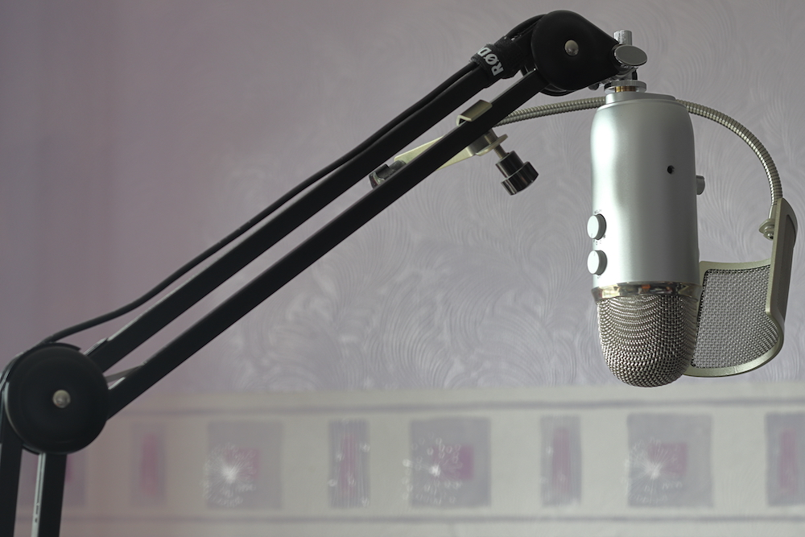
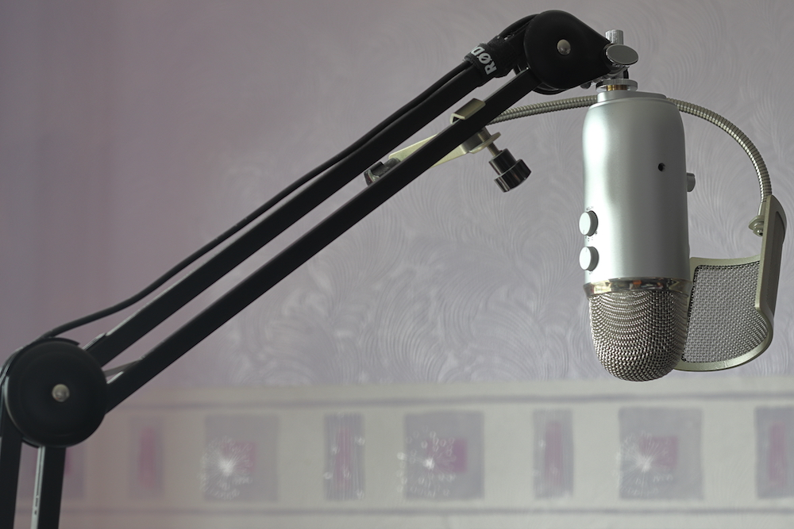
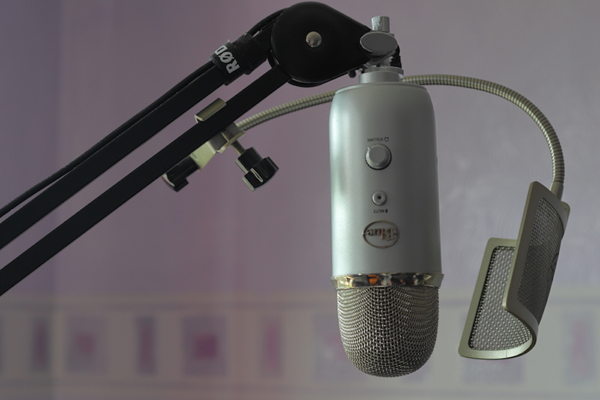

Blue Yeti and RØDE PSA1
 

This is very popular, one of the best USB microphones:
- good price for a value
- great quality and sensivity
- durable build, made of metal
- very easy to use
- works via USB, long USB cable included
- several modes
- headphones jack port
I've been using this microphone for over five years now and I am not willing to change it.

RØDE PSA1 desk mount which I am using with this microphone is a great option to hang microphone above your desk. You can save space this way and it absorbs bump sounds when you recording.
Here is video from my old blog where you can see how adjustable this mount is. In the end you will find short audio test of Blue Yeti microphone.